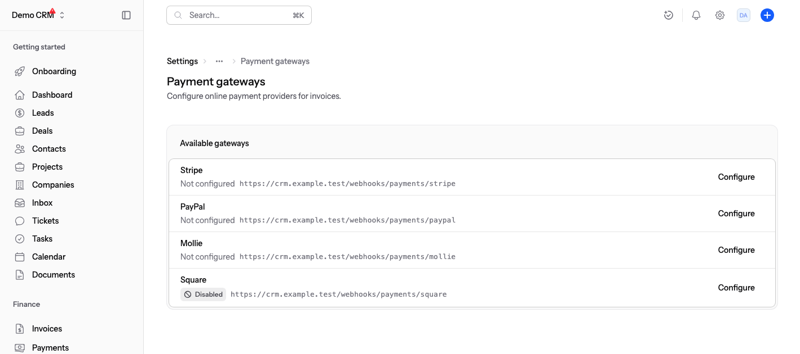
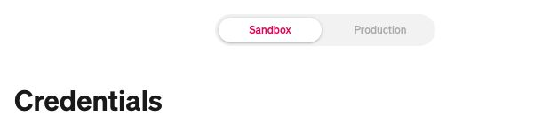
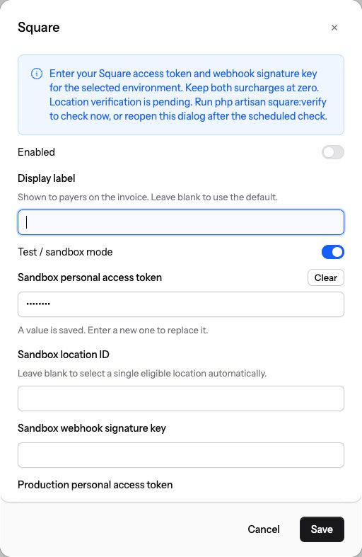
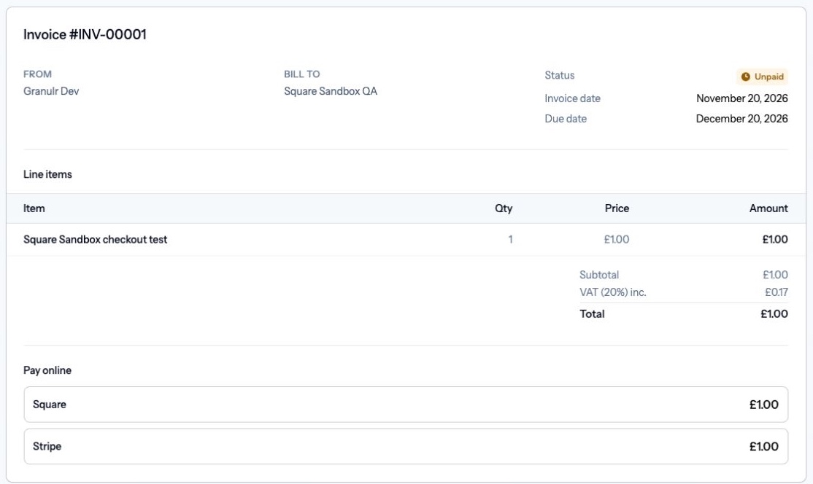
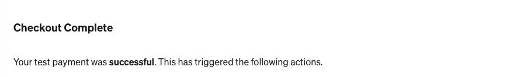
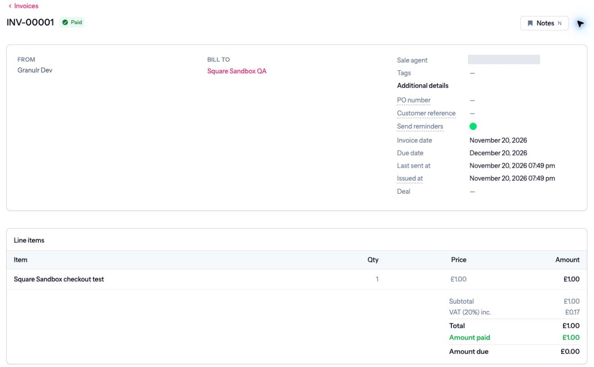
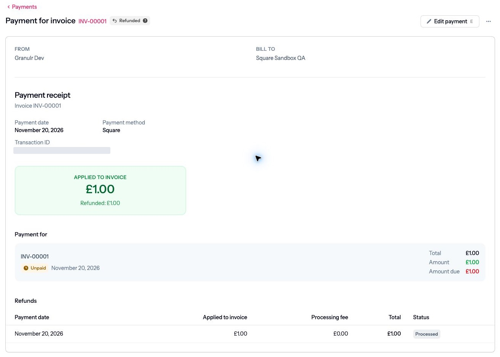

Requirements
The module takes payment for the outstanding balance of an eligible Perfex invoice through Square-hosted checkout. Perfex records the payment after Square confirms it. The original payment can be refunded from Perfex by authorised staff.
- A self-hosted installation of Perfex CRM Next v1.0.1 or later, with the Invoices module enabled. Perfex CRM Classic (CodeIgniter) is incompatible. The tested Next version is v1.0.1. The PHP ZIP extension is required for module uploads.
- A Perfex super admin account for Square connection and setup.
- A Square Developer application owned by your organisation, plus a Square merchant account and eligible card-processing location in the environment you will use.
- A publicly reachable HTTPS Perfex hostname to receive Square payment and refund notifications. You can verify a token and location on a local installation before testing payment delivery.
- A working Perfex scheduler and the queue setup that matches its configured driver.
Start on a test installation. A confirmed Sandbox payment updates its matching invoice in the Perfex installation that receives it. Use test invoices, test merchant data and Square test payment methods.
Square Sandbox and live Square
Already taking payments with Square? Use your existing Square login and merchant account. Open an application you control in Square Developer Console or create one for Perfex. The application provides your access token and webhook subscription. Your existing Square merchant account receives the payments.
| What to set | Sandbox | Production |
|---|---|---|
| Square seller and data | Use a Sandbox test seller and location. The Sandbox Testing Panel simulates the payment. | Use your existing live Square seller and the location that should receive invoice payments. |
| Square Developer app | Select Sandbox to copy your test access token and create a test webhook subscription. | Select Production for the live access token and its own webhook subscription. |
| Perfex configuration | Use the Sandbox fields on a test Perfex installation and turn on Test / sandbox mode. | Use the Production fields on your live Perfex installation and turn off Test / sandbox mode when ready to accept customer payments. |
Quick connection check on localhost or MAMP
- In your Square Developer application, open Credentials and select Sandbox at the top. In the Sandbox Access token row, use the copy icon labelled Copy Access token.
- In Perfex, open Settings → Finance → Payment Gateways → Square → Configure. Turn on Test / sandbox mode, leave Enabled off and paste the token into Sandbox personal access token. Leave the webhook key and Production fields blank for this check.
- Select Save to store the token locally. From the Perfex application directory, run
php artisan square:verifywith the same PHP version used by Perfex. Reopen Configure to see the verified location and currency. If the check asks you to choose a location, copy its Location ID from Locations in the same Square app and environment, save it in Perfex and run the check again.
Complete the webhook and invoice test steps on a test Perfex hostname that Square can reach over HTTPS.
Square Developer Console credential walkthrough · Square credentials by environment
1. Install the module
- Extract the purchase download and locate SquarePayments-0.1.4.zip.
- In Perfex, open Settings → Application → Modules. Upload the inner module ZIP and enable Square Payments.
- Open Settings → Finance → Payment Gateways. Find the Square row and select Configure to edit its settings.
For a first-time installation, upload the latest ZIP directly. Perfex creates the module tables when you enable it. Earlier versions are unnecessary.

2. Save Square credentials
Sign in to the Square Developer Console, open or create the application your organisation will use, and select Sandbox at the top of the application for the first test. Use this same Square application and environment throughout setup.

Open Square → Configure and enter values in the matching Sandbox or Production fields. Each environment has its own token, location and signature key.
| Field in Perfex | Where to find it in Square |
|---|---|
| Sandbox personal access token | Credentials → Sandbox. Use Copy Access token in the Sandbox Access token row. |
| Production personal access token | Credentials → Production. Use Copy Access token in the Production Access token row. |
| Location ID | Leave blank if you have a single eligible location. If Square returns several, open Locations in the same app and copy the ID of the location that should receive payments. Its currency must match the invoice currency. |
| Webhook signature key | Open Webhooks → Subscriptions and copy the key from Endpoint Details → Signature Key. Create the subscription in step 3. |
Select Save to store the settings. Run php artisan square:verify from the Perfex application directory, or wait for the scheduled connection check. For a token-only check, leave Enabled off. Reopen Configure to see the connection status. If there is one eligible location, the check saves its ID automatically.

Enter secrets only in your own Perfex installation. Keep access tokens and signing keys out of screenshots, tickets and shared setup notes.
Square Developer Console guide · Square credentials · Square Locations guide
3. Configure and verify webhooks
- In Square → Configure, copy the exact Webhook URL near the bottom of the dialog. Open the same Square app and environment in Developer Console.
-
Go to Webhooks → Subscriptions → Add subscription and fill in the form.
Field in Square What to select Subscription name A label such as Perfex Next Sandbox or Perfex Next Production. Notification URL Paste the exact Webhook URL from Perfex, including any port. Square must be able to reach it over HTTPS. API version 2026-11-18, the version used by this module.Payments (2) Select payment.createdandpayment.updated.Refunds (2) Select refund.createdandrefund.updated.Select only those four events. Leave the three bulk event checkboxes and the other categories, including Checkout and Invoices, unchecked. Select Save.
For a local address such as
perfexnext.local, use the token-only check in step 2. Square needs a public HTTPS URL to deliver the webhook. - Open the saved subscription. In Endpoint Details, select Show under Signature Key. Copy it into Sandbox webhook signature key or Production webhook signature key in Perfex, matching the subscription’s environment.
- In the same editor, set Test / sandbox mode on for Sandbox, or off for Production. Set Fixed surcharge and Percent surcharge (%) to zero. Under Supported currencies, include the saved Square location’s currency. Turn on Enabled and save. The invoice option appears after signed delivery is verified.
- Send a signed event that names the merchant connected in Perfex, then reopen Configure with that environment selected. The Waiting for a signed webhook delivery notice clears after a matching delivery.
Generate a real Sandbox event for the connected merchant
Square’s test button can send sample merchant data. A successful delivery of that sample alone may leave Perfex waiting for a signed event from your merchant. Do this from Sandbox, with the same Square app and test seller connected in Perfex.
- Open the CreatePayment API Explorer and select Sandbox. Select the access token for the connected test seller and the saved location ID.
- Use the test
source_idcnon:card-nonce-ok, a freshidempotency_keyand a small amount in the location’s currency in minor units. For example, an amount of100inGBPis £1.00. Include the selectedlocation_id. - Run the Sandbox request. Check the event delivery in Square’s webhook logs, then reopen Configure and check that the waiting notice has cleared. This payment establishes delivery from your test seller. It has no matching Perfex checkout record. Complete step 4 to test invoice posting.
A private or local-only hostname cannot receive Square notifications. For end-to-end setup, use a controlled staging domain with a valid public HTTPS certificate. Create the Square subscription using the exact URL shown in Perfex, including any subdirectory path.
Square subscription setup · Square signature verification · API Explorer instructions
4. Test checkout and refunds
- Create a payable test invoice in the saved Square location’s currency. Open its customer invoice page and choose Square.
- In Square's Checkout API Sandbox Testing Panel, choose Next, then Test Payment to simulate payment. The Preview Link displays the buyer's checkout page for inspection.
- Once Square shows Checkout Complete, reopen the Perfex invoice. Check that its balance updates and the native Payments section contains one matching payment. If confirmation is still pending, check the Square event and the queue, then run the reconciliation command under Operations and upgrades if needed.
- Open the native Square payment in Perfex and choose Refund payment. Confirm only on the intended test record. The native action requests the remaining refundable amount against the original payment.
- Check the outcome on the payment. A pending refund stays pending until Square confirms it. A failed or rejected refund leaves the collected amount unchanged. The module can also reflect refunds made on the original payment in Square, including partial refunds.
What a completed Sandbox test looks like




Switch to Production after verification
Repeat the token, location and webhook steps using the Production environment and the merchant’s production app credentials. In the intended production Perfex installation, turn Test / sandbox mode off and confirm both surcharges are zero. Check the location currency and wait for a matching signed event from the live merchant, such as the next normal payment through that Square account. Only send customers to the Perfex Square checkout after both the connection and delivery status are verified.
Operations and upgrades
Scheduler and reconciliation
Set up the Perfex cron job to invoke Laravel’s scheduler every minute. The Square module checks unverified Square settings and runs a reconciliation batch every five minutes. It checks outstanding payments and refunds when Square is enabled. If the queue uses Database or Redis, keep its worker running. The default Cron queue uses the scheduler.
* * * * * php /path/to/perfex/artisan schedule:runFor a manual check, run this command from the Perfex application directory using the same PHP version and application user as your scheduler. It checks batches for both environments.
php artisan square:reconcileOn a native payment, Check Square refunds looks for provider-side refunds to reconcile.
Reconnect or change a location
Choose the original environment when reconnecting. Review outstanding checkouts and refunds before replacing a merchant connection. Historical payments retain the merchant account and location used at the time. If credentials for the original merchant are no longer connected, restore that account in the correct environment to manage its earlier payment or refund.
Upgrade safely
- Check the new package’s version requirements and test it on a copy of the installation.
- Back up the database, installed module files and the Perfex encryption key. Retain the previous package and protect the backup.
- Use Perfex’s module upload or update flow to replace the module. Preserve the installed module data and follow the package’s migration instructions.
- Verify the connection and delivery status for each configured environment. If you used OAuth on an earlier build, enter the personal access token for the same Square merchant in Configure before taking new invoice payments. Existing payments and refunds keep their original references. Check the scheduler and queue, then test an eligible invoice and a refund on the staging copy.
Troubleshooting
| Symptom | What to check |
|---|---|
| Location verification is pending or failed | Run php artisan square:verify from the Perfex application directory and check the result. Copy the token again from the correct Square app and environment if needed. Reopen Configure to see the latest status. |
| No eligible location appears | Check the connected merchant, environment and location status in Square. The location needs card-processing capability and a supported currency. |
| Square Developer Console cannot create the subscription | Confirm that the notification URL is the exact public HTTPS address from Perfex. If the console still shows a generic error, use Square’s Create webhook subscription API with the same application’s access token, API version and four events from step 3. For Sandbox, use the Sandbox endpoint and token. Square subscription API |
| Waiting for a signed delivery | Confirm Square is Enabled, the external HTTPS URL is reachable, the four events are subscribed and the saved signature key belongs to the correct environment. If a test delivery contains a sample merchant, generate a real event for the connected Sandbox test seller. Look up the delivery status in Square’s webhook logs. |
| Square is missing from an invoice | Check that the invoice is payable, Square is enabled, Test mode matches the connected environment, signed delivery is verified, both fees are zero and the invoice currency matches the active Square location and allowed Perfex currencies. |
| Square shows a completed payment, but the invoice is still unpaid | Check the original payment environment and merchant, Square webhook delivery and Perfex Platform Health. Run the reconciliation command. If the invoice currency changed after checkout, reconcile the Square payment ID and original invoice currency with your finance team. Avoid entering a duplicate manual payment while reconciliation is pending. |
| A refund remains pending or could not be sent | Check the payment and refund in the original Square account. Use Check Square refunds or the reconciliation command. Restore the original merchant connection if it changed. Wait for the existing refund’s final state before starting another request. |
| Payments were missed while Square was disabled | Restore the correct connection and settings, re-enable Square and run the reconciliation command. A verified capture can be reconciled through the saved Perfex checkout record. |
For a reverse proxy, verify the public Perfex URL and trusted proxy settings before copying the webhook URL. A hostname or HTTPS scheme mismatch changes the URL checked against Square’s signature. Square webhook event logs · Perfex troubleshooting
Compatibility and support
Version 0.1.4 targets Perfex CRM Next v1.0.1. Automated coverage uses simulated responses for connection, currency and environment checks, invoice payments, refunds and reconciliation. A separate GBP test against Square Sandbox verified hosted checkout, signed delivery, one posted payment and a processed refund. Verify checkout and refunds with your own Sandbox seller and currency during setup.
Square lists payment processing in Australia, Canada, France, Ireland, Japan, Spain, the United Kingdom and the United States. The selected Square location controls the permitted currency. This module covers hosted invoice checkout and refunds on the original payment. Separate Square Terminal, subscriptions and catalogue workflows are outside its scope. Square seller markets
For module support, use the support channel supplied with your download. Include the module version, Perfex version, Square environment, issue time, relevant Perfex invoice number and Square event, payment or refund ID. Remove secrets and customer information from screenshots and logs.